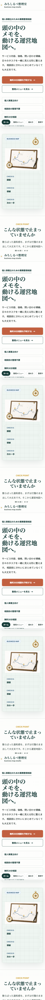

課題設定
個人サービスでは、提供内容、価格、問い合わせ条件、対応範囲が散らばると、相談前の不安が大きくなります。LPでは受付前に確認したい情報を一画面ずつ整理する方針にしました。
Case Study / Day100
個人サービスの「何を頼めるか」「いくらかかるか」「どう相談するか」を整理し、問い合わせ前の迷いを減らすLPとして設計しました。

Project Notes
個人サービスでは、提供内容、価格、問い合わせ条件、対応範囲が散らばると、相談前の不安が大きくなります。LPでは受付前に確認したい情報を一画面ずつ整理する方針にしました。
ホーム、サービス内容、流れ、事例、料金、問い合わせ、FAQを分け、ユーザーが必要な情報へすぐ移動できる構造にしました。
React + Tailwind CSS + Viteで構築し、生成素材を個別アセットとして利用。モックを一枚貼りするのではなく、DOM、CSS、画像素材を組み合わせて再構成しました。
ブラウザで主要ルート、アセット表示、フォーム入力、FAQ開閉、横スクロールの有無を確認。気づいた不整合を改善項目として切り出しました。
制作後にSEO、モバイル、法務、パフォーマンス、UXの観点で見直し、弱い箇所を次の改善対象として整理しました。
AIを制作工程に組み込み、設計・実装・検証を回すことで、見た目だけでなく判断材料として使えるページを目指しました。